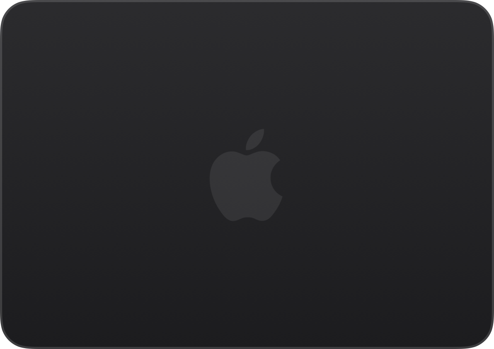
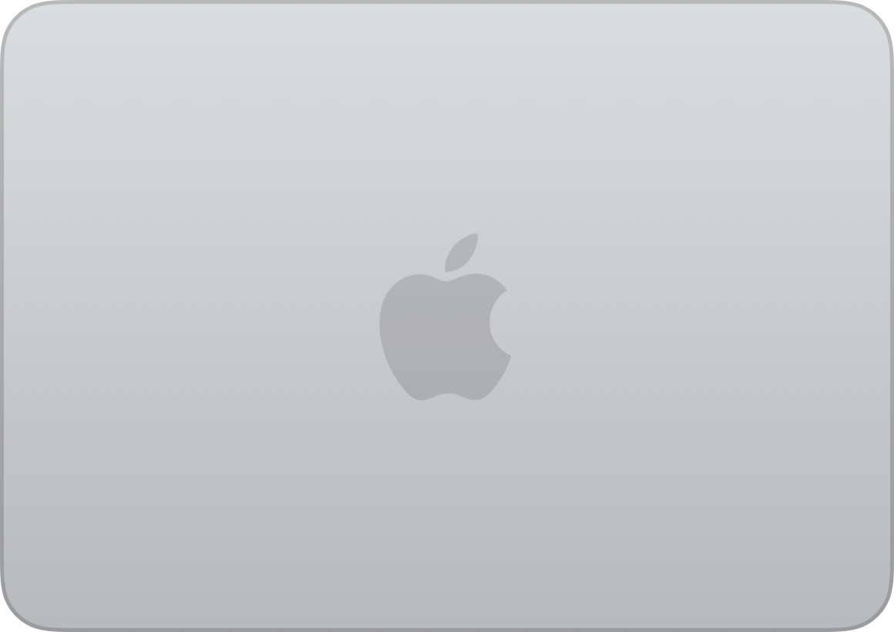
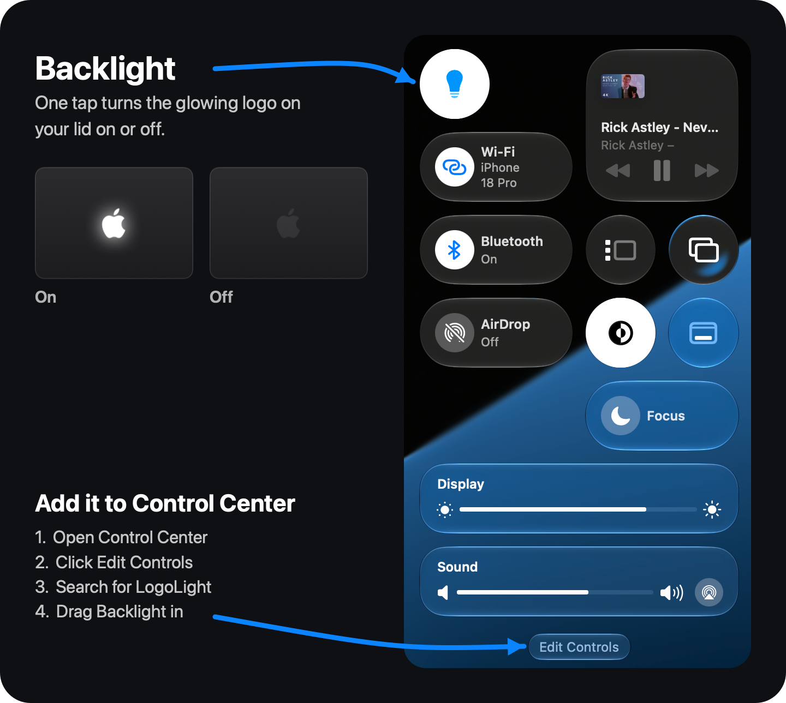
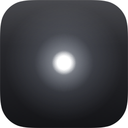

For MacBook Pro with PROLED XDR Display
Control your glowing Apple logo.
LogoLight is a free menu bar app for the illuminated Apple logo on the back of your new MacBook Pro with PROLED XDR Display. Turn it off, dim it, or let it breathe, pulse or beat like a heart.
- Signed with a Developer ID and notarized by Apple
- Free and open source, on GitHub
- Like it? Buy me a coffee
Effects
Breathe. Pulse. Heartbeat.
Three ways for the logo to come alive, made from the light's own hardware fades. Each one peaks at the brightness you set, and pauses while the logo is off or the display sleeps. Try them here.
No effect: the logo holds steady at your brightness, and still adapts to the light around you.
Breathe Slow and soft, like an old Mac's sleep light.
Pulse A steady, quicker rise and fall.
Heartbeat Two quick beats, then a rest.
Reduce Motion is on, so the effects aren't animated here.
Live view
Your lid, live, in its own finish.
The menu shows your lid as it is right now, read from the hardware on every frame while the menu is open, so it follows effects, the slider and changes made elsewhere. And it's drawn in your Mac's own finish, space black or silver.
-



Space black -

Silver
And more
Small things, done right.
-
In Control Center, too
Put LogoLight's Backlight switch in Control Center, or straight into the menu bar: in Control Center, click Edit Controls, search for LogoLight and drag it in.
Control Center offers apps no sliders, so brightness stays in LogoLight's menu.

-
Option-click to toggle
Hold ⌥ Option and click LogoLight in the menu bar to switch the logo on or off, without opening the menu.
-
Launch at Login
LogoLight can start when you log in, and it remembers your brightness and effect.
-
A password once, at most
LogoLight usually switches the logo with no password at all. If it can't switch the logo directly, it asks for your administrator password once: it turns on Disable Password at the same time, and doesn't ask again.
In that case, LogoLight can only turn the logo on and off: brightness and effects need direct control.

Free to download.
Every feature is free. If you enjoy LogoLight, you can say thanks with a coffee.
- Unzip LogoLight.zip, if your browser hasn't already.
- Move LogoLight to your Applications folder.
- Open it. LogoLight lives in the menu bar.
Requires a MacBook Pro with PROLED XDR Display. Signed with a Developer ID and notarized by Apple.
Rather build it yourself? The source is on GitHub, under the MIT license.
Questions
How do I turn off the Apple logo on my MacBook Pro?
With LogoLight, flip the Backlight switch at the top of its menu, or hold ⌥ Option and click LogoLight in the menu bar. The logo fades out, and stays off even after you quit LogoLight or restart your Mac.
Without LogoLight, Apple's documented way is a command in Terminal: sudo defaults write com.apple.CoreBrightness LEBacklightMode -int 0 turns the logo off, and sudo defaults delete com.apple.CoreBrightness LEBacklightMode turns it back on. Apple documents only on and off; LogoLight adds brightness and effects.
Why isn't it on the App Store?
LogoLight works with the part of macOS that drives the logo, through system interfaces that Mac App Store apps aren't allowed to use. Store apps also have to run in a sandbox, which would shut LogoLight out completely.
So it's offered here instead, signed with a Developer ID and notarized by Apple.
Is it safe?
LogoLight is signed with a Developer ID and notarized by Apple, which means Apple has checked it for malicious software.
It usually needs no password. If LogoLight can't switch the logo directly, it asks for one once, in the standard macOS dialog, and installs a small rule (in /etc/sudoers.d) that lets your user account run exactly two commands without a password: Apple's documented commands to turn the logo off and back on. Nothing else. The rule is checked before it's installed, so it can't break sudo, and unchecking Disable Password removes it.
And the whole source is on GitHub, so anyone can check what it does.
Which Macs does it work on?
The MacBook Pro with PROLED XDR Display (the OLED MacBook Pro), the model with the illuminated Apple logo on the back of the lid. On other Macs, LogoLight opens but tells you the logo isn't available.
How do I uninstall it?
- If Disable Password is checked, uncheck it first. That removes the password rule.
- Turn off Launch at Login if you turned it on.
- Quit LogoLight and move it from Applications to the Trash.
Quitting stops any effect and returns the logo to its normal brightness. If you turned the logo off, it stays off. To turn it back on without LogoLight, run sudo defaults delete com.apple.CoreBrightness LEBacklightMode in Terminal.
Is it really free?
Yes. Download it and use every feature for free. If you enjoy it, you can buy me a coffee, but it doesn't unlock anything; it just says thanks.
It's open source, too: the code is on GitHub under the MIT license, so you can read it, change it or build it yourself.